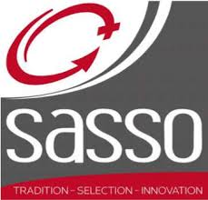

SOBRE NOSSAS GENÉTICAS

Líder mundial no segmento da avicultura alternativa, a SASSO está presente nos mais diversos países do mundo.
Uma empresa de inovação tecnológica focada na geração de conhecimento e tecnologia para agropecuária brasileira.